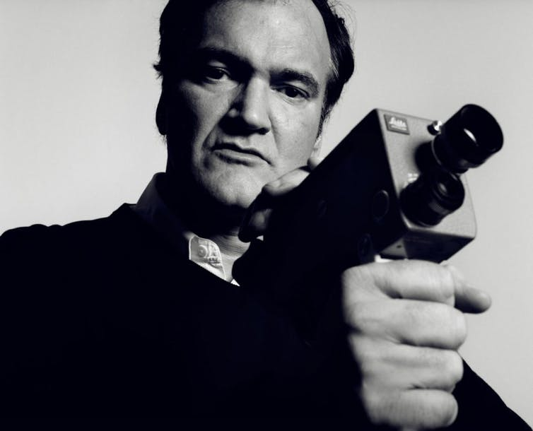
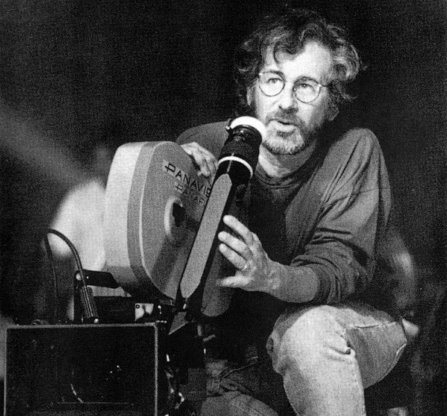
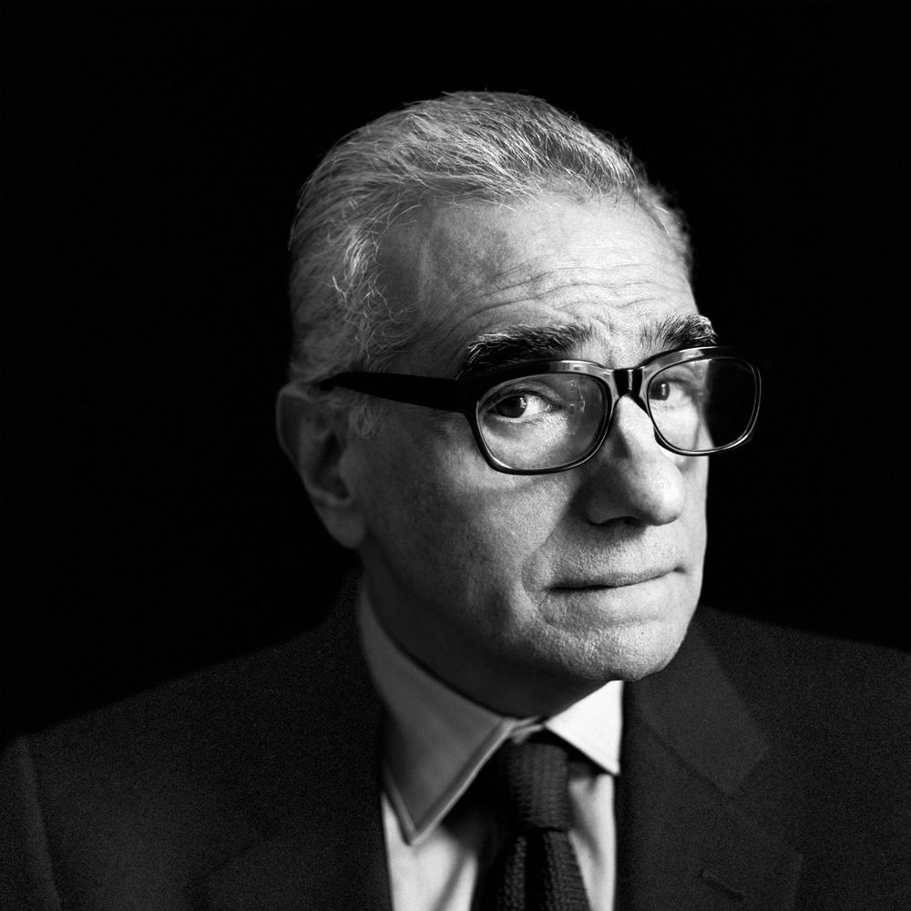
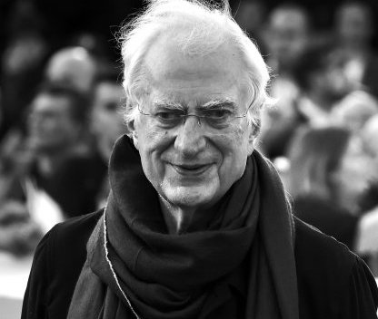

Le Cinéma (selon Charlène)
Une sélection de films choisis par mes soins ; les must-see. Ceux a voir absolument avant de rejoindre John Vega.
Quentin Tarantino

On commence avec Quentin Tarantino. Ce réalisateur et scénariste américain est réputé pour ses films aux caractéristiques violentes, stylisées, avec des dialogue acérés et une fascination pour le cinéma et la culture pop. Il se fait connaître en tant que metteur en scène avec ses deux premiers films, Reservoir Dogs (1992) et Pulp Fiction (1994). Il a réalisé plusieurs films ayant connu à la fois le succès critique et le succès populaire : Jackie Brown, Kill Bill, Inglourious Basterds, Django Unchained, Les huit salopards (2015) ou encore Once Upon a Time In Hollywood.
Les 3 meilleurs Tarantino's (toujours selon moi)
- Pulp Fiction
- Inglorious Basterds
- Django Unchained
François Ozon

François Ozon est un réalisateur, scénariste et dialoguiste français. La sexualité, l'ambiguïté, l'ambivalence et la subversion des normes sociales ou familiales sont certains de ses thèmes privilégiés. Ses films sont un vaste mélange de cinéma d'auteur et populaire.
Les 3 meilleurs Ozon's (toujours selon moi)
- Jeune et jolie
- 8 femmes
- L'amant double
Steven Spielberg

Steven Spielberg est un réalisateur américain connu pour son cinéma relativement fantastique. Il a réalisé de nombreux films notamment autour de personnages extra-terrestres. Il a également monté des sociétés de production ainsi que des fondations.
Les 3 meilleurs Spielberg's (toujours selon moi)
- La Liste de Schindler
- Les Dents de la Mer
- Lincoln
Martin Scorsese

Martin Scorsese est un cinéaste américain, célèbre pour ses films comme Mean Streets, Taxi Driver, Raging Bull, Les Affranchis, Casino, Kundun, Gangs of New York, Les Infiltrés, Aviator, Shutter Island, Hugo Cabret ou encore Le Loup de Wall Street. Après avoir collaboré durant de nombreuses années avec Robert de Niro, il a fait de Leonardo DiCaprio son nouvel acteur fétiche. Martin Scorsese compte parmi les cinéastes américains les plus importants de ces quarante dernières années. Cinéphile érudit et généreux, il est l'une des figures clés du nouvel Hollywood des années 70 aux côtés de ses complices et amis Brian De Palma, Francis Ford Coppola ou Steven Spielberg.
Les 3 meilleurs Scorsese's (toujours selon moi)
- Les Affranchis
- Shutter Island
- Casino
Bertrand Tavernier

Touche-à-tout, Bertrand Tavernier, auteur, réalisateur, scénariste, écrivain ou dialoguiste, a été récompensé à plusieurs reprises en France et à l'étranger. Il a contribué à enrichir le patrimoine du 7e art, avec sa caméra, sa fibre sociale, son sens du détail dans les décors et son attachement aux musiques de film.
Les 3 meilleurs Tavernier's (toujours selon moi)
- La Princesse de Montpensier
- Le Juge et l'Assasin
- Que la fête commence